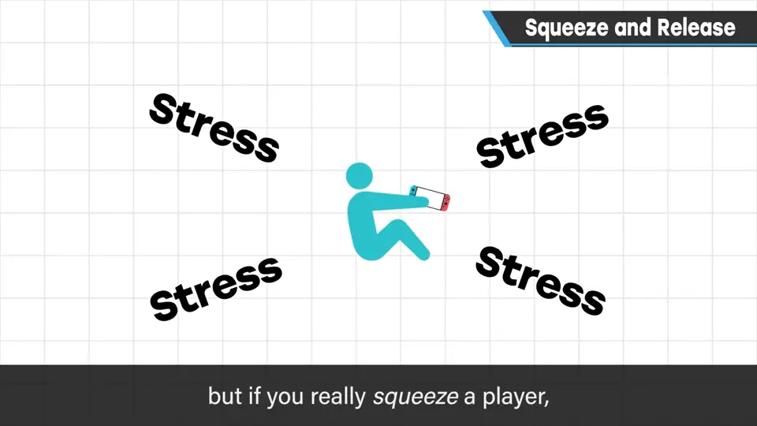
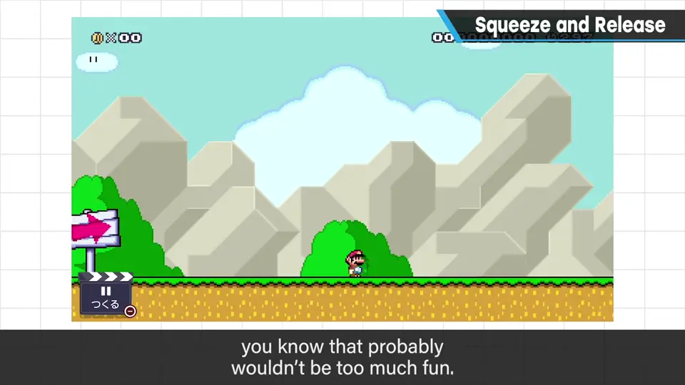
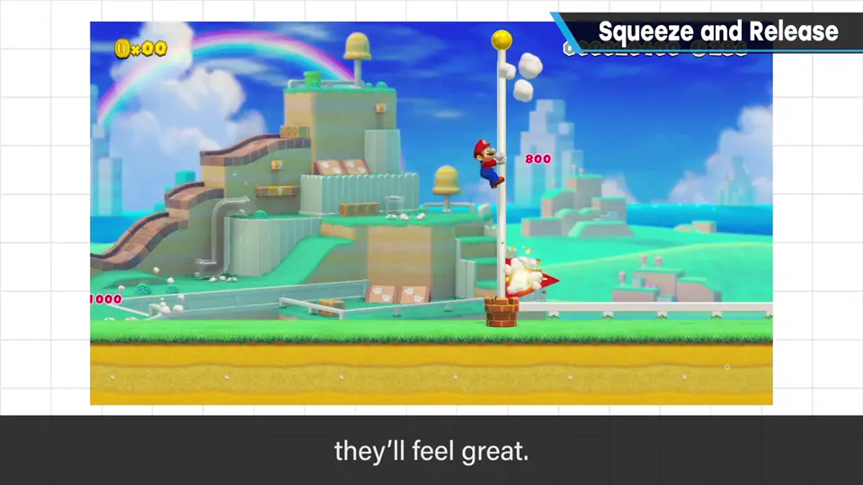
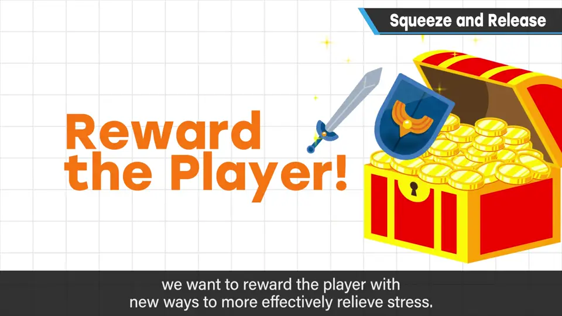
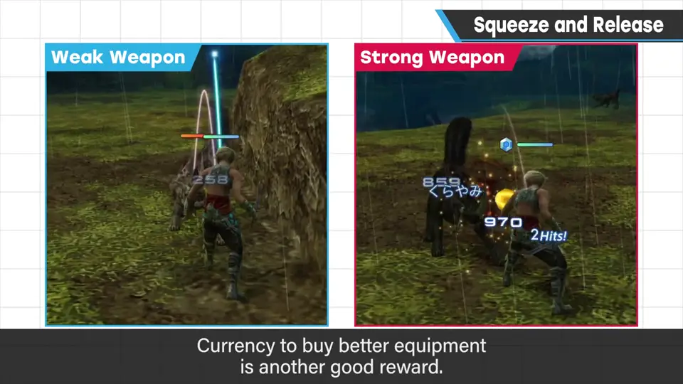
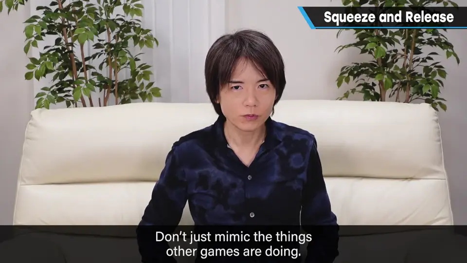

速览
「出现敌人、打倒它」——单纯模仿也能成为游戏，但值得审视它的意义。游戏有个奇怪之处：施加压力（stress）再解除，才是乐趣的核心。压力本身不好玩，但狠狠施压、再一下子释放，就会获得快感。客观看，一开始没有压力岂不更舒适？但玩游戏的人都懂那样不会有趣。所以压力虽是讨厌的东西，也不能像拔杂草一样全部去掉。第一步：给出必须克服的障碍（敌人、障碍物、谜题都行），克服后获得畅快感。第二步：给出能更有效地释放压力的回报，例如经验值和技能让你能对抗更强的敌人、金钱可以买更好的装备；单纯能往前走也是回报，但带点选择幅度游戏性更高。重新审视「施压→释放→变得能应对」的流程，而不是照搬别的游戏的常见做法，也许能做出更新颖的游戏。
1. 施压，再释放 0:00
游戏的有趣之处在于施加压力，然后解除。压力本身不好玩，但「紧紧施压、再一下子释放」能带来快感和畅快感。
客观来看有点奇怪：一开始就没有压力不是更舒服吗？但玩游戏的人都明白，那样就不会有趣。


2. 第一步：设置必须克服的障碍 1:06
给出某种压力——敌人、障碍物或谜题都可以：不克服就无法前进的障碍。克服它、解除压力，就会觉得畅快。

3. 第二步：回报，让下一次释放更有效 1:31
顺利克服后，最好给予能更有效地释放压力的回报：
- 获得经验值或技能、变强，就能对抗更强的敌人；
- 获得金钱，可以买齐更好的装备；
- 单纯能往前走也是一种回报，但留出一些选择幅度，游戏性会更高。


敌人 · 障碍 · 谜题"] --> R["克服 → 释放
畅快感"] R --> W["回报
经验 · 技能 · 金钱/装备 · 选择"] W --> N["能应对更强的压力"] N --> S
4. 重新思考，而不是照搬 2:07
重新审视「施压 → 释放 → 变得能够应对」这一流程，也许就能看清让游戏更好玩的流程。不是单纯模仿其他游戏中常见的做法，而是重新思考原本的意义，就有可能做出更新颖的游戏。

自测题
1. 为什么樱井说不该把压力「像杂草一样拔掉」？
压力本身虽不好玩，但游戏的乐趣恰恰来自施加压力再释放；没有压力，游戏就不会有趣。 0:52
2. 释放压力之后，应该给玩家什么样的回报？
能更有效地释放压力的回报：经验值/技能让人变强、金钱买更好的装备；能往前走也算回报，但有一些选择幅度游戏性更高。 1:24
3. 本期最后给出的建议是什么？
重新审视「施压→释放→变得能应对」的流程，别照搬其他游戏的常见做法，重新思考原本的意义，可能做出更新颖的游戏。 2:07